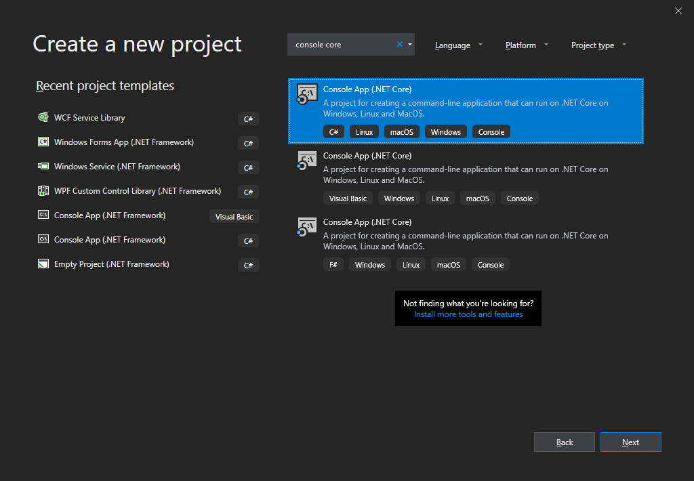
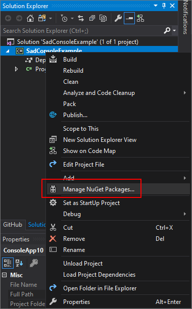
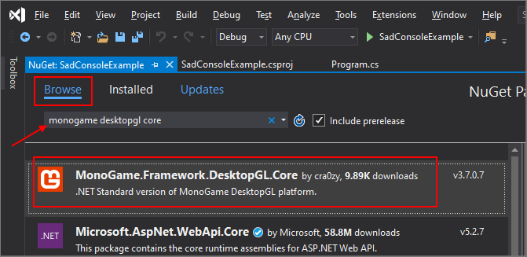
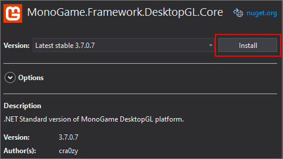
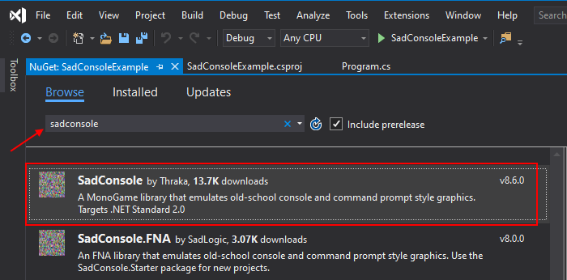
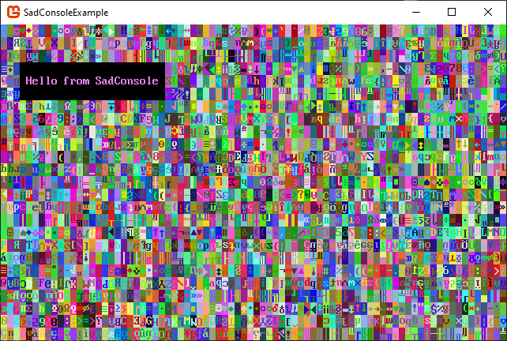

Create a new SadConsole .NET Core project
This page describes how to create a new project based on SadConsole Standard using .NET Core 2.2 and Visual Studio.
SadConsole uses MonoGame 3.7+.
You can also create a new project in the .NET SDK CLI.
Prerequisites
During install, make sure that you select the .NET Core cross-platform development workload.
- If you have already installed Visual Studio, you can run the Visual Studio Installer that was added to your computer, and modify your installation to add the .NET Core cross-platform development workload.
Note
.NET Core 3.0 allows you to hide the console window that is automatically generated with a .NET Core app. I would choose that as the target framework. Visual Studio 2017 does not support .NET Core 3.0.
Create a new project
Load up Visual Studio. If you're using an older version of Visual Studio, you won't see the same screenshot below. But the steps should be similar.
In the Create a new project dialog, type console core into the search box and select the Console App (.NET Core) project template that has the C# tag.

Press Next and then set the Project name to SadConsoleExample and choose a location on your computer to save the project.
Congratulations, you have a new project! However, the project does not have MonoGame or SadConsole yet.
Add the MonoGameGL NuGet Package
In the Solution Explorer, right-click on the project and select Manage NuGet Packages. This will display the NuGet package manager.

Click the Browse tab and search for monogame desktopgl core. The first package that shows should be MonoGame.Framework.DesktopGL.Core by cra0zy.

On the right-side of the NuGet package manager, click Install.

This adds the unofficial .NET Core cross-platform MonoGame package to your project. Eventually, an official package will be released. But, for now, this is what we can use.
Add the SadConsole NuGet Package
Now that you've installed the MonoGame DesktopGL package, you can install the SadConsole package.
In the NuGet package manager window, change the search box to sadconsole. The first package that shows should be the official SadConsole package by Thraka.

On the right-side of the NuGet package manager, click Install. This adds the SadConsole library to your project. When installed, a readme.txt file will popup. There is a link for the SadConsole Discord channel. Join us! You can close the readme.txt file.
Congratulations, you have all of the required libraries to start creating a SadConsole game!
Create the game
You need to change the startup code that was automatically generated for your project.
In the Solution Explorer pane, double-click the Program.cs file to open it. You should see a very simple console application that we will change:
using System;
namespace SadConsoleExample
{
class Program
{
static void Main(string[] args)
{
Console.WriteLine("Hello World!");
}
}
}
Change this code to:
using System;
using SadConsole;
using Microsoft.Xna.Framework;
using Console = SadConsole.Console;
namespace SadConsoleExample
{
class Program
{
static void Main()
{
// Setup the engine and create the main window.
SadConsole.Game.Create(80, 25);
// Hook the start event so we can add consoles to the system.
SadConsole.Game.OnInitialize = Init;
// Start the game.
SadConsole.Game.Instance.Run();
SadConsole.Game.Instance.Dispose();
}
static void Init()
{
var console = new Console(80, 25);
console.FillWithRandomGarbage();
console.Fill(new Rectangle(3, 3, 23, 3), Color.Violet, Color.Black, 0, 0);
console.Print(4, 4, "Hello from SadConsole");
SadConsole.Global.CurrentScreen = console;
}
}
}
Press the F5 key to run your SadConsole program. You should be presented with the following screen:

Next steps
Now that you have the project created and working, check out the existing tutorials. These will walk you through the basics.